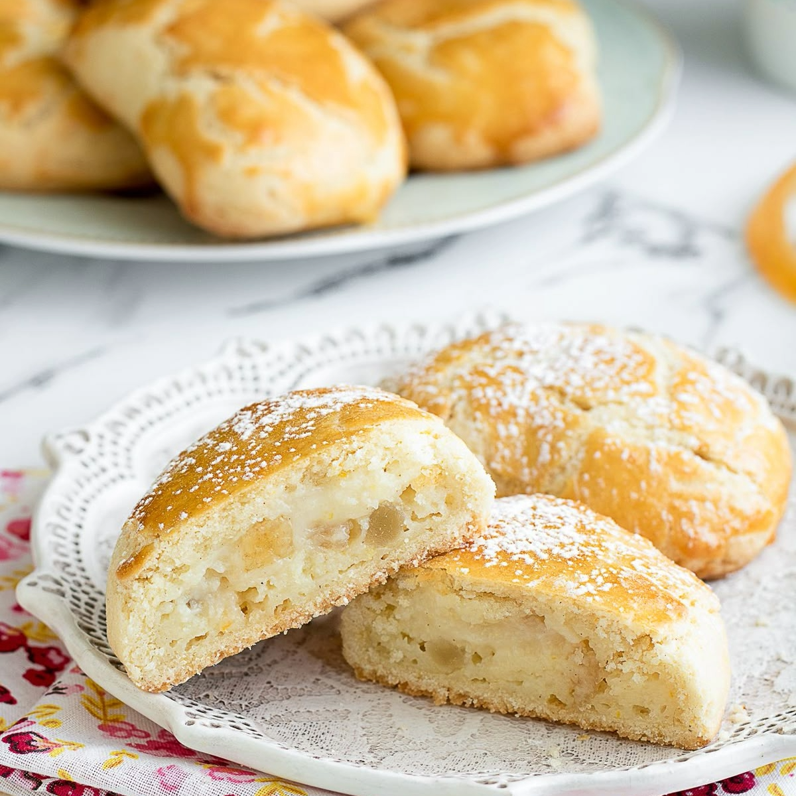

Ricette Dolci
In questa sezione troverai tutte le ricette dolci tipiche delle regioni italiane, adatte ad ogni occasione.

Campania -Le Sfogliatelle frolle-
Ingredienti:
-Burro (freddo ma plastico) 125 g
-Zucchero 125 g
-Farina 00 250 g
-Baccello di vaniglia ½
-Scorza di limone verde ½
-Scorza d'arancia ½
-Uova 50 g
-Ammoniaca per dolci 2 g
-Miele 10 g
Per il ripieno:
-Acqua 250 g
-Semolino 75 g
-Ricotta di bufala 250 g
-Zucchero 125 g
-Uova 60 g
-Arancia candita 50 g
-Scorza d'arancia ½
-Scorza di limone verde ½
-Cannella in polvere 1 g
-Baccello di vaniglia ½
Per spennellare:
-Uova 1
Preparazione:
Per preparare le sfogliatelle frolle iniziate a realizzare la pasta frolla. Nella ciotola di una planetaria dotata di gancio a foglia versate il burro freddo ma plastico e lo zucchero semolato. Mescolate a velocità moderata e non appena saranno ben amalgamati e avrete ottenuto una sorta di crema unite il miele.
Aggiungete poi la scorza di mezza arancia, quella di mezzo limone e i semi di un mezzo baccello di vaniglia. Se la planetaria non dovesse raccogliere tutto potete aiutarvi con una spatolina per amalgamare gli ingredienti al meglio.
Rompete l'uovo in una ciotolina e sbattetelo leggermente. Unitelo in planetaria aggiungendone poco per volta, fino a che non sarà completamente assorbito. Anche in questo caso potete aiutarvi con una spatolina per amalgamare gli ingredienti. Non appena la massa sarà amalgamata aggiungete l'ammoniaca e continuate a mescolare.
A questo punto setacciate la farina e unitela in planetaria. Non appena la farina sarà completamente assorbita spegnete la macchina.
Trasferite la frolla su un vassoietto e appiattitela con una spatola. Coprite con della pellicola trasparente per alimenti e riponete in frigorifero per almeno 4 ore.
Per la crema:Nel frattempo occupatevi di preparare il ripieno. Versate l'acqua in un tegame e salatela leggermente. Non appena inizierà a bollire versate il semolino a pioggia mescolando di continuo con una frusta, in modo da evitare la formazione di grumi. Lasciate cuocere per 3-4 minuti utilizzando un mestolo di legno e girando ininterrottamente.
Non appena il semolino sarà asciutto versatelo in una pirofila, schiacciate leggermente e coprite con la pellicola a contatto. Lasciatelo raffreddare completamente, poi trasferitelo nella ciotola di una planetaria dotata di foglia; unite anche i canditi e azionate la macchina per ammorbidire il semolino
Aggiungete poi la ricotta in due volte e quando sarà ben amalgamata al semolino aggiungete anche lo zucchero. Unite poi tutti gli aromi: la cannella, la scorza di mezza arancia grattugiata, quella di limone e i semi della mezza bacca di vaniglia.
Mescolate ancora e in ultimo aggiungete l'uovo. Non appena il ripieno sarà pronto e l'uovo sarà stato completamente assorbito, trasferitelo in una sac-à-poche, non sarà necessario utilizzare una bocchetta.
Composizione e cottura:Riprendete la frolla e trasferitela su una spianatoia leggermente infarinata. Ricavate un filone e utilizzando le mani spezzate dei pezzi di frolla di circa 50 grammi.
Ne otterrete 11; per dare maggiore uniformità alle vostre sfogliatelle frolle facendo scorrere le porzioni di impasto tra i due palmi delle mani dategli una forma sferica. Utilizzando un mattarello date a ciascun pezzo di pasta frolla una forma ovale e farcite generosamente con il ripieno al centro di ogni pezzetto di impasto steso. Piegate poi a mò di fagottino, ripiegando la pasta da un estremo dell'ovale all'altro in modo da foderare il ripieno; sigillate i bordi facendo una leggera pressione con le dita. Utilizzando poi un coppapasta rotondo dal diametro di 9 cm, eliminate gli eccessi di pasta coppando attorno all'impasto farcito, in modo da ricavare le vostre sfogliatelle frolle. Rimpastate gli scarti di frolla e utilizzateli per creare altre 4 sfogliatelle, procedendo allo stesso modo.
Disponete le frolle man mano su una leccarda foderata con carta forno ed esercitate una leggera pressione con l'indice per creare una rientranza alla base dei fagottini e realizzare la classica forma a conchiglia. Lasciate riposare per tutta la notte in frigorifero coprendo con la pellicola per alimenti.
Trascorsa una notte riprendete le sfogliatelle e spennellatele con l'uovo leggermente sbattuto. Poi cuocete in forno statico preriscaldato a 225° per 18-20 minuti fino a che risulteranno ben dorate. A questo punto sfornate, lasciate intiepidire e gustate le vostre sfogliatelle frolle!
Puglia - I Pasticciotti-
Ingredienti:
-Farina 00 500 g
-Burro 250 g
-Tuorli 4
-Baccello di vaniglia 1
-Zucchero a velo 200 g
Per il ripieno:
-Farina 00 50 g
-Latte 500 ml
-Tuorli 6
-Baccello di vaniglia 1
-Zucchero 150 g
-Amarene sciroppate q.b.
Per spennellare:
-Tuorli 1
-Panna fresca liquida 3 cucchiai
Preparazione:
Per realizzare i pasticciotti, iniziate preparando la crema pasticcera: fate scaldare il latte a fuoco basso con la bacca di vaniglia aperta. Intanto sbattete bene i tuorli con lo zucchero e unite la farina setacciata, quindi aggiungete questo composto al latte e mescolate sempre a fuoco basso con una frusta. Fate addensare la crema e fatela raffreddare in frigorifero con un foglio di pellicola a contatto.
Preparate intanto la pasta frolla: mettete la farina ed il burro freddo nel mixer e frullate per ottenere un composto dall'aspetto sabbioso e farinoso, che trasferirete su una spianatoia. Aggiungete lo zucchero, i semi del baccello di vaniglia e i tuorli e impastate velocemente il tutto fino ad ottenere un impasto compatto ed abbastanza elastico. Avvolgete la frolla nella pellicola trasparente e mettetela a riposare in frigo per almeno mezz'ora.
Trascorso il tempo di riposo della frolla, stendetela su di una spianatoia infarinata, con l'aiuto di un matterello, in modo che abbia uno spessore di circa mezzo cm. Foderate tutti gli stampini, già imburrati e infarinati con la frolla.
Inserite all'interno di ogni stampino 2 cucchiaini di crema e se la gradite un'amarena. Ricoprite la formina con la pasta frolla avanzata e tagliate la pasta eccedente in modo che i bordi siano ben squadrati.
Sbattete un tuorlo in un paio di cucchiai di latte o panna e spennellate la superficie dei pasticciotti. Sistemate gli stampini su di una leccarda e infornateli in forno già caldo a 180° per 30 – 35 minuti. Quando i pasticciotti saranno ben dorati sfornateli, fateli raffreddare e gustateli ancora caldi!